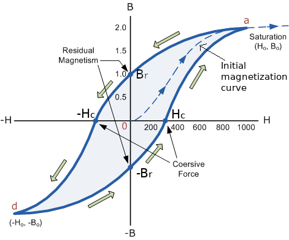

Ferromagnetism
In ferromagnetic materials contrary to what seen for diamagnetic and paramagnetic materials, μr and χm depend on the field
Let us begin by considering the relationship between B and H in such a material. We may assume that we are establishing a curve of B versus H for a sample of ferromagnetic material which is completely demagnetized; both B and H are zero. As we begin to apply an mmf, the flux density also rises, but not linearly, as the experimental data of Fig. 1.11 show near the origin. After H reaches a value of about 100 A*t/m, the flux density rises more slowly and begins to saturate when H is several hundred A*t/m. Having reached partial saturation, let us now turn to Fig. 1, where we may continue our experiment at point x by reducing H. As we do so, the effects of hysteresis begin to show, and we do not retrace our original curve. Even after H is zero, B = Br , the remnant flux density. As H is reversed, then brought back to zero, and the complete cycle traced several times, the hysteresis loop of Fig. 9.12 is obtained. The mmf required to reduce the flux density to zero is identified as Hc ,
